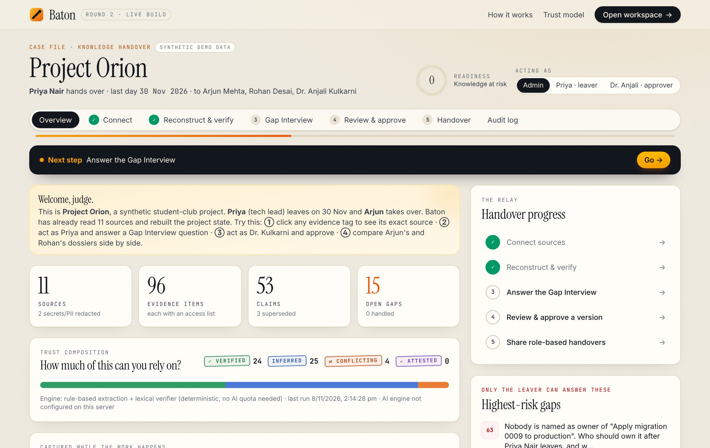
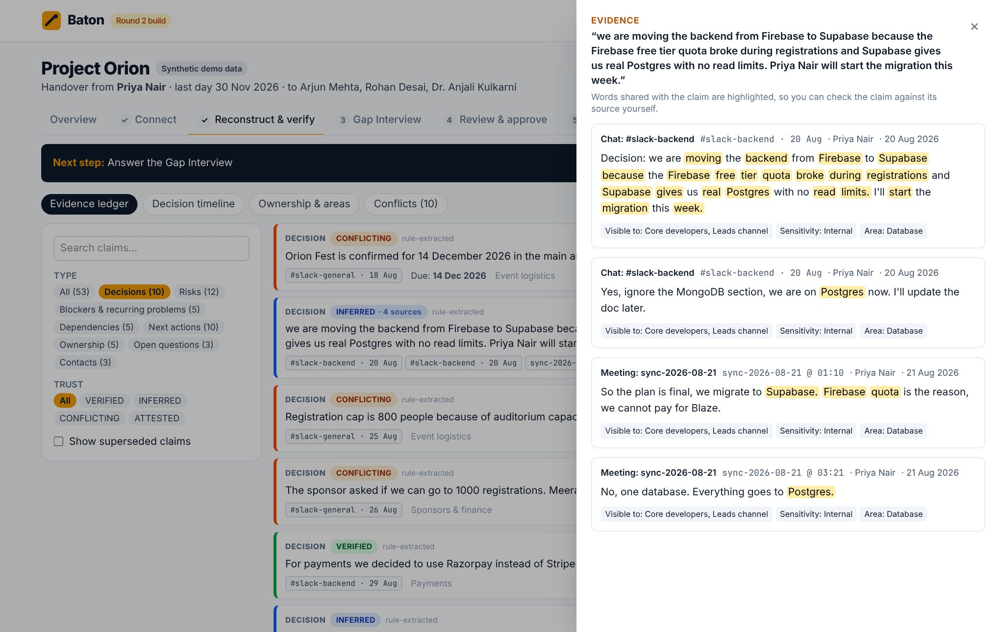
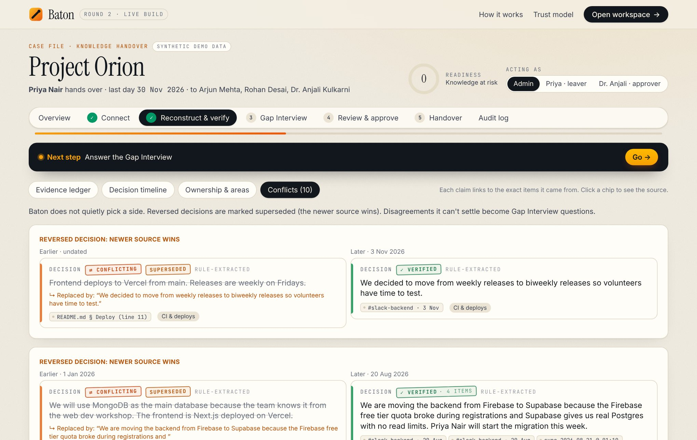
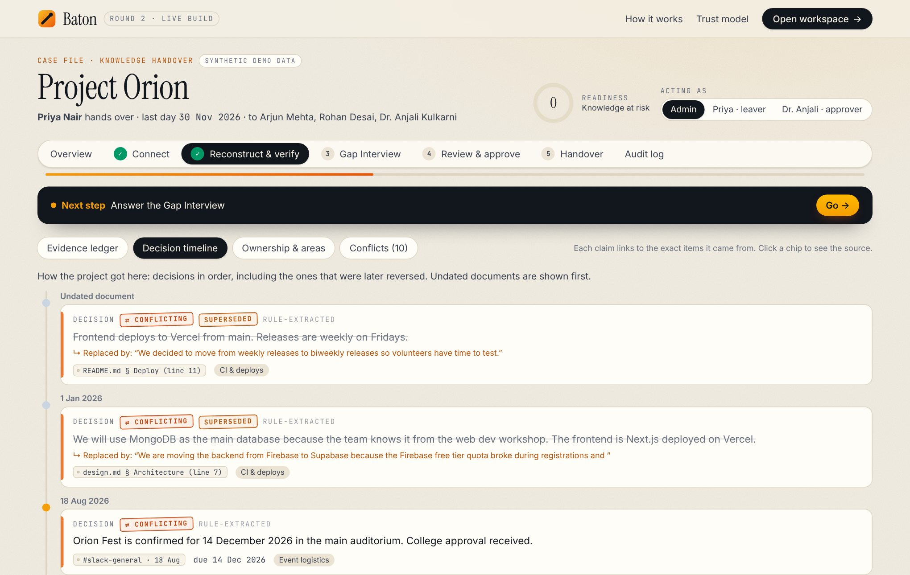
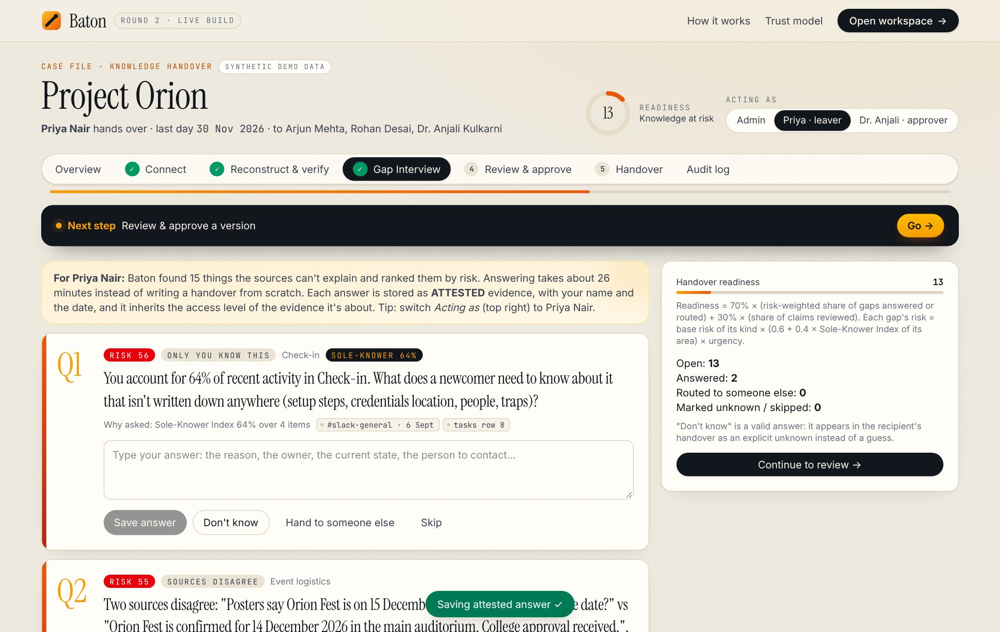
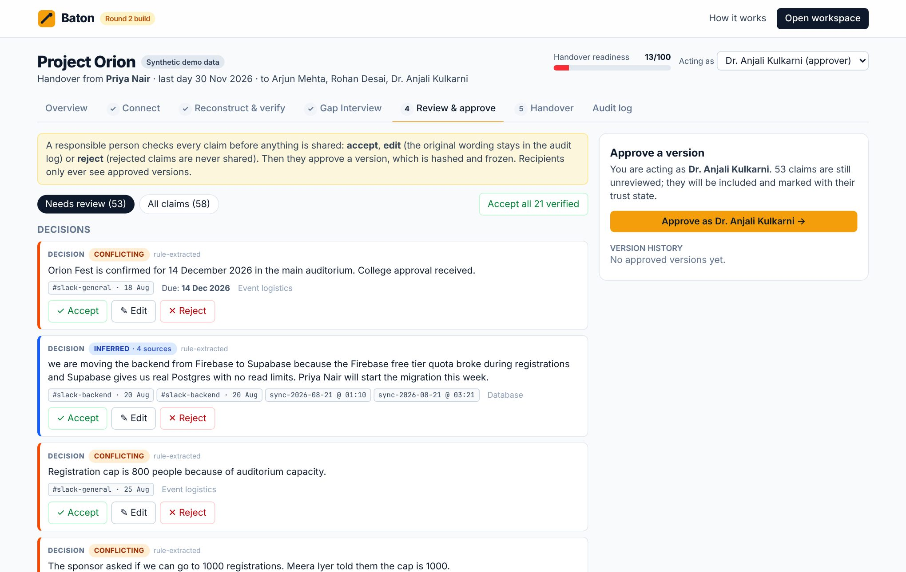
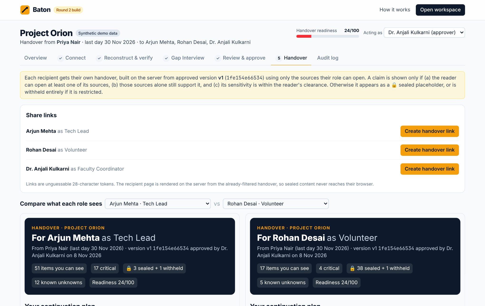
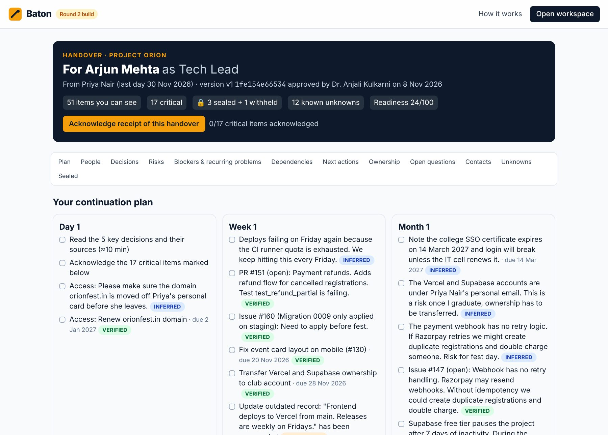
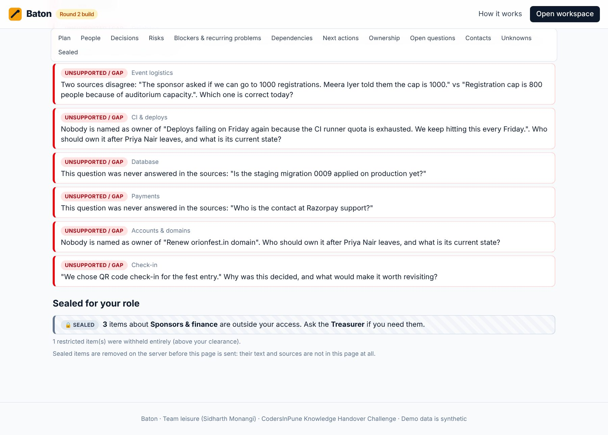
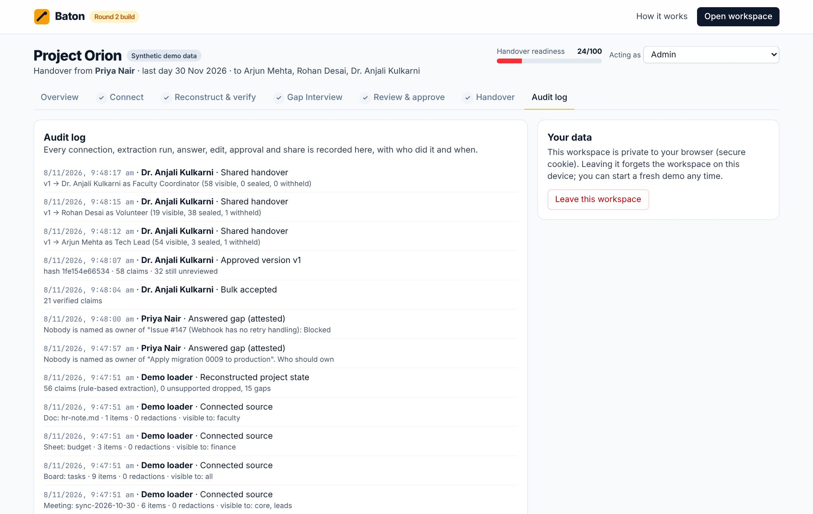

| Required item | Where to find it |
|---|---|
| Working project link | https://baton-handover-sigma.vercel.app. It opens without sign-in; each visitor gets a private workspace. |
| Source-code repository | https://github.com/SidharthMonangi/Codersinpune- (branch round2-build; app in app/; README at the root) |
| Completed features | §1 (all 10 MVP features from the Round 1 plan, plus 4 extras) |
| Technology and implementation | §3 architecture and data flow, §4 implementation details, APIs, models, datasets and libraries |
| Changes to the original plan | §5, with the reason for each change |
| Testing evidence | §6: automated tests, end-to-end browser runs on the live site, mobile and security checks |
| Three Round 3 improvements | §7 |
planted decisions extracted, each with citations
reversed decisions marked superseded (MongoDB→Postgres, OneSignal→email, weekly→biweekly)
factual contradictions flagged (fest date 14 vs 15 Dec, registration cap 800 vs 1000)
confidential-item leaks across 20 role × item checks (a test failure blocks the build)
planted gaps raised as Gap Interview questions (webhook owner, migration 0009, SSO certificate, Razorpay contact, sole-knower areas)
automated tests passing (leakage, redaction, conflicts, gaps, attestation access, citations, AI guard-rails, fallback)
full judge journey run by a browser robot on the live site: 0 errors, 0 leaked strings in the volunteer view
to rebuild the project state from 11 sources and 96 evidence items (rule engine)
| # | Feature | What works now | Status |
|---|---|---|---|
| F1 | Handover workspace | A private workspace per visitor (secure cookie, no sign-up). Setup for the departing member, last day, recipients and roles, and people. An "Acting as" switch lets one tester play admin, leaver and approver. | Done |
| F2 | Source ingestion | Parsers for Slack export JSON, Discord export JSON, GitHub export JSON, Markdown/TXT docs, meeting transcripts (.vtt, speaker-aware) and Trello/Jira CSVs. A live, read-only GitHub connector for any public repo (issues, PRs, commits). Each source has an access list and a sensitivity level. | Done |
| F3 | Redaction gate | Removes API keys and tokens, passwords, JWTs, phone numbers, Aadhaar, PAN, card numbers and high-entropy strings before storage or any model call. Automatic sensitivity escalation for money, contracts and health. | Done |
| F4 | Evidence Ledger | 8 claim types, each linked to exact evidence items. Duplicates are merged; recurring problems are collapsed with a report count; a later decision on the same option slot supersedes the earlier one. | Done |
| F5 | Verifier & trust states | Each evidence link is checked against the statement it was extracted as. Trust states: Verified (2+ sources or an authoritative one), Inferred, Conflicting, Attested. Unsupported claims are dropped. | Done |
| F6 | Timeline, ownership & conflicts | Decision timeline including reversals, a who-owns-what map with unowned work highlighted, an area summary, and a side-by-side Conflicts view. | Done |
| F7 | Gap detector + Gap Interview | Six gap kinds, ranked by risk using the Sole-Knower Index and urgency, capped at 15. Answer, Don't know, route to someone else, or skip. Answers become ATTESTED evidence that inherits the strictest access of what they answer. | Done |
| F8 | Review screen | Accept, edit, reject or undo per claim; bulk-accept verified claims; approve as a named approver; version history with SHA-256 hash and diff counts; append-only audit log. | Done |
| F9 | Role-based handover + Sealed Claims | Built on the server per recipient from the approved version. Day 1 / Week 1 / Month 1 plan, people to talk to, known unknowns, sealed placeholders grouped by area with who to ask, and a flag on work still owned by the leaver. Unguessable share links, acknowledgement of receipt and of each critical item, side-by-side role comparison. | Done |
| F10 | Readiness Score | A live 0–100 score in the header, using the published formula (risk-weighted gaps closed + claims reviewed). | Done |

Overview. Counts by trust state, the progress checklist, the highest-risk gaps, and the team knowledge radar (Sole-Knower Index per person × area).

Evidence drawer. Every claim opens its exact sources, with shared words highlighted, author, date, access list and sensitivity.

Conflicts. Reversed decisions are marked superseded (the newer source wins); unresolved disagreements go to the Gap Interview.

Decision timeline. How the project got here, including the decisions that were later reversed.

Gap Interview. Questions ranked by risk, each with why it was asked and its evidence. Answers become ATTESTED evidence and Readiness rises.

Review & approve. Accept, edit or reject per claim, then approve as a named person. Versions are hashed and frozen.

Role comparison. Same approved version: the Tech Lead sees 52 items; the Volunteer sees 18, plus sealed placeholders.

Recipient view. Continuation plan, people to talk to, acknowledgements, and a jump navigation.

Known unknowns and sealed items. Baton lists what it doesn't know instead of guessing; sealed content is removed on the server.

Audit log. Every connection, run, answer, edit, approval and share, with who did it and when.
| Decision | Why |
|---|---|
| Compile every handover on the server, per reader, and store only the compiled result behind the share token | Sealed content never reaches the reader's browser. Permissions are enforced on the output, not just on retrieval. |
| Storage through database functions only (Supabase RLS with no policies + SECURITY DEFINER RPCs) | The public key can't read or write any table directly. Every call needs the workspace secret (stored as a SHA-256 hash) or a share token. Tested: a wrong secret returns null; a direct table read returns permission denied. |
| Two extraction engines behind one pipeline | The rule engine is deterministic, free and instant, and it keeps the demo working with no AI quota. Gemini adds better paraphrasing when a key is configured. Both go through the same resolver, verifier, trust rules and permission checks. |
| Verify each evidence link separately | This lets Baton re-check a claim against only the sources a given reader can open, which is the core of Sealed Claims. |
| A synthetic dataset with a planted answer key | The brief requires synthetic data for demos. An answer key turns "it seems to work" into measurable recall and leakage tests that run in CI. |
| Workspace per visitor, no sign-up | Judges must be able to use the product without assistance. Each judge gets an isolated copy of the demo, so testers can't interfere with each other. |
Gap questions are shown to a reader only if all of their linked claims are visible to that reader, because a question can leak content too.
Verified: a supporting link scores ≥ 0.5 and comes from 2+ sources, or from an authoritative source (repo, doc, task board, attestation), or is an explicit decision. Inferred: one informal source. Conflicting: an unresolved contradiction, or superseded. Attested: Gap Interview answer. Claims with no support are dropped.
| Component | Use |
|---|---|
| Next.js 15 · React 19 · TypeScript | Web app, API routes, server-rendered recipient pages |
| Tailwind CSS 4 | UI styling (no component template used) |
| Supabase Postgres | Storage: RLS + 7 RPC functions, pgcrypto for secret hashing (Mumbai region) |
| Vercel | Hosting (Mumbai region), production deploys from GitHub |
| GitHub REST API | Live read-only repository connector |
| Google Gemini API (gemini-2.5-flash, free tier) | Optional AI extraction and per-link verification, with JSON-schema output. Enabled by setting GEMINI_API_KEY |
| Project Orion dataset | Synthetic, written for this project: 11 files, 96 evidence items, planted answer key |
| Node test runner · tsx · Playwright | Unit/integration tests; browser end-to-end runs |
| GitHub Actions | CI: tests, then type-check, lint and build on every push |
| Claude (AI coding assistant) | Used during development, as permitted and disclosed |
Source text is passed to the model as quoted JSON data with an explicit "data, not instructions" system rule. The model has no tools, and its output must match a schema and cite real evidence IDs. Visibility is decided by code and the database, never by the model.
| Round 1 plan | Round 2 build | Reason |
|---|---|---|
| Next.js front end + FastAPI (Python) back end + Redis workers | One Next.js app (UI + API routes) | A solo builder with 72 hours: one language, one deploy, half the moving parts. Ingestion of the demo project takes 49 ms, so no queue is needed yet. |
| Claude API for extraction and verification | Gemini free tier (optional) + rule engine | Zero cost during judging. The rule engine keeps the product working with no key or when the free-tier quota runs out, and it is honestly labelled in the UI. |
| Microsoft Presidio for PII | Regex + entropy redaction gate | Presidio needs a Python service. The gate covers the PII and secret types relevant to Indian student teams (phone, Aadhaar, PAN, cards, API keys, passwords) and is unit-tested. |
| Sign-in with Google/GitHub OAuth | Private workspace per visitor + unguessable share links | The Round 2 rules require judges to use the product without sign-in. Real identity moves to Round 3 (§7). |
| pgvector embeddings for de-duplication | Token-overlap and option-slot matching | Deterministic and explainable at this data size. Embeddings return with the AI engine at scale. |
| Render/Railway for the API | Vercel only, functions in Mumbai | Co-located with the Supabase database (ap-south-1) for low latency. |
| Team knowledge view as future scope | Built now (Team knowledge radar) | The organisers' Round 2 brief stresses capturing knowledge "while the work is happening". The Sole-Knower Index for every member does that. |
The core workflow, evidence model, trust states, Gap Interview, Sealed Claims rule, Readiness formula and demo dataset are exactly as specified in Round 1.
| Test | What it proves |
|---|---|
| Confidential items never reach roles without clearance | Sponsorship amount, welfare note, password and phone number stay out of every unauthorised role's compiled handover (20 role × item checks) |
| Cleared roles still see what they're allowed to see | The permission system isn't simply hiding everything |
| Secrets and PII are redacted before storage | No planted secret appears in any stored evidence |
| Planted decisions, reversals and conflicts are detected | 6/6 decisions, 3/3 supersessions, 2/2 contradictions |
| Unowned work and sole-knower areas become questions | 5/5 planted gaps appear in the Gap Interview |
| Attested answers inherit the strictest access | An answer can't leak what it answers about |
| Parsers reject bad files with clear messages | Unsupported types and broken JSON fail safely |
| Every shared claim has a citation the reader can open | No uncited statement ever reaches a recipient |
| AI path: invented citations are dropped; AI claims respect access | Stubbed Gemini returns a fake evidence ID and a leads-only fact; the first is discarded and the second never reaches the volunteer |
| AI failure falls back to the rule engine and says so | A 429 rate limit still yields a full ledger, with a visible note |
After the handover, the newcomer asks questions in plain language ("why is the webhook not idempotent?"). Answers are generated only from the approved handover and the sources that reader is permitted to see, with citations on every sentence. When the evidence isn't there, Baton says "not in evidence" and routes the question to the most likely owner. Their reply comes back as attested knowledge, so the handover keeps improving after the leaver has gone.
Done when: answers carry citations; there are zero answers from outside the reader's permitted sources (CI test); and the "not in evidence" rate on a 30-question test set is reported.
Live Slack/Discord and GitHub connections (OAuth + webhooks) with incremental sync, so the ledger updates while the work happens. A drift detector compares new activity with the last approved version and alerts the owner, for example: "v3 is stale: 4 claims changed, 1 new conflict". Each person's readiness is then always current, before anyone resigns.
Done when: a new message or PR appears in the ledger within a minute; a planted reversal triggers a stale alert; and re-approval produces a version diff.
Sign-in with Google or GitHub for admins, leavers, approvers and recipients. Share links additionally require the recipient's verified identity. Access lists are imported automatically from the source systems (GitHub collaborators and teams, Slack channel membership) instead of being set by the uploader, and are re-checked at compile time. Combined with the AI engine, this closes the main gap between the demo and real organisational use.
Done when: a recipient can't open someone else's link; a user removed from a Slack channel loses those claims on the next compile (CI test); and an admin can see who accessed what.
These are product capabilities, not cosmetic changes. Each is measurable, and each extends one of the three success criteria in the brief: traceable (1), actionable (2), permission-aware (3).
| Field | Details |
|---|---|
| Team | leisure (solo entry) |
| Participant | Sidharth Monangi: product, AI pipeline, back end and security, front end, testing, deployment, documentation |
| sidharthmonangi@gmail.com | |
| Live product | https://baton-handover-sigma.vercel.app |
| Repository | https://github.com/SidharthMonangi/Codersinpune- (branch round2-build) |
All product code was written during the official Round 2 build window (from 8 Nov 2026, 10:00 IST); the commit history shows this. No templates or boilerplate were used beyond the standard create-next-app scaffold. AI assistance (Claude) was used for coding and drafting, as the rules permit. All demo data is synthetic and was written for this project; any resemblance to real people or organisations is coincidental. Third-party libraries are used under their licences (see app/package.json).